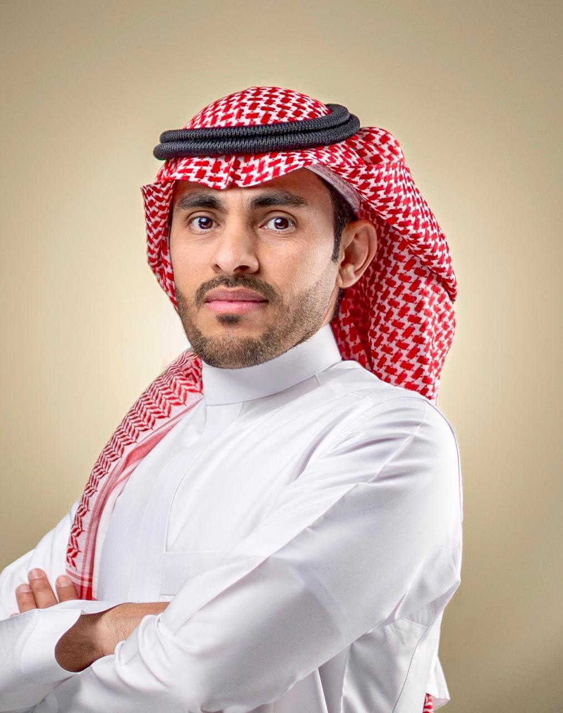

توجيه الرؤية بخبرة فنية وبصيرة استراتيجية.

المؤسس والمستشار الرئيسي
أستاذ مساعد في الهندسة الصناعية بجامعة تبوك، المملكة العربية السعودية، حاصل على درجة الماجستير في الهندسة الصناعية من جامعة لورانس التكنولوجية (LTU) ودرجة الدكتوراه في هندسة النظم من جامعة أوكلاند، الولايات المتحدة الأمريكية. يتمتع بخبرة صناعية كمدير خط أمامي سابق في شركة بيبسيكو بالرياض. يشمل تدريسه دراسة العمل، وتخطيط الإنتاج والتحكم، وتخطيط المرافق، وتقنيات الصناعة 4.0. يركز بحثه على الصناعة 4.0، والذكاء الاصطناعي، وتحسين العمليات، وتحليل النظم، واتخاذ القرارات المبنية على البيانات. حصل على عدة جوائز منها جائزة التدريس المتميز في العوامل البشرية وبيئة العمل (IEOM 2024، دبي) وجائزة التميز البحثي من جامعة تبوك (2025).